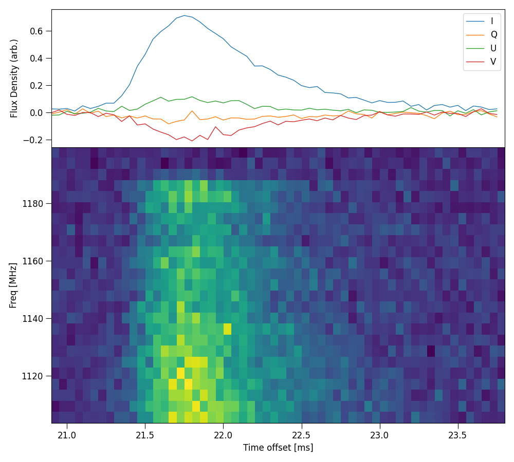

ILEX scripts
The following is a list of scripts that can be used to either create new FRB dynamic spectra or create different plots. There are two ways to envoke these scripts. If you use the absolute filepath of these scripts, you can run them in the bash console using
python3 <path>/scripts/plot_dynspec.py --options
where <path> is the installation directory of ILEX.
Or if you add the script directory to your PATH enviromental variable PATH=PATH:<path>/scripts/
python3 -m plot_dynspec --options
In the following we will use the latter.
Quickly plot Dynamic spectra
Quickly plot dynamic spectrum
python3 -m plot_dynspec filepath
# options
--tN 1 # averaging factor in time
Create Dynamic spectra from X and Y polarisations
Create Dynamic spectrum from X and Y time series complex polarisations. Note by default only stokes I dynamic spectrum is made.
python3 make_dynspec.py
# options, data arguments
-x filepath # X polarisation filepath
-y filepath # Y polarisation filepath
--nFFT 336 # Number of freq channels
--bline # Apply baseline correction
--QUV # make full stokes Dynamic spectrum
# data reduction arguments
--sigma 5.0 # S/N threshold for baseline correction
--baseline 50.0 # Width of rms crops in [ms]
--tN 50 # Time averaging factor, helps with S/N calculation
--guard 1.0 # Time between rms crops and burst in [ms]
# Pulsar arguments (polarisation calibration, or for pulsar data)
--pulsar # enables pulsar folding
--MJD0 None # Initial Epoch MJD
--MJD1 None # Observation MJD
--F0 None # Initial Epoch pulsar frequency
--F1 None # Spin-down rate
--DM None # Dispersion Measure of Pulsar
--cfreq 1271.5 # Central Frequency MHz
--bw 336 # bandwdith MHz
# output arguments
--ofile filepath # Name of new dynamic spectra, full output is filepath_{S}.npy where S is the stokes ds
Coherently Dedisperse X and Y polarisation time series data
python3 -m coherent_desperse
# options
-x filepath # X polarisation filepath
-y filepath # Y polarisation filepath
--DM val # Dispersion Measure pc/cm^3
--cfreq val # central frequency MHz
--bw val # bandwidth MHz
--f0 val # Reference frequency MHz
--quick # Apply dispersion using zero-padding to nearest optimal FFT length
-o filepath # Output filepath, full output is filepath_{X, Y}.npy for each polarisation
Make new FRB config file
python3 -m make_config filepath
# options
--celebi # Make config file based on CELEBI output
Make FRB panel plot
Make plot of various panels of FRB data
python3 -m plot_master
# options
--parfile filepath # filepath of FRB config file
--plot_panels "[S;D]" # panels to plot: P = PA profile, S = Stokes time profile, D = Dynamic spectrum, M = model of time series
# R = residual plot of model time series
--model # Model time series plot, if M panel given, will plot in seperate panel, else if S given, will plot in
# stokes panel
--modelpar filepath # use sepereate yaml file to specify posteriors for plotting model time series
--modelpulses # plot each individual convolved gaussian
--filename filepath # Save figure in .png type format with given name
Here is an example of plotting the stokes time series and dynamic spectrum: .. code-block:: console
python3 -m plot_master –parfile examples/220610.yaml –plot_panels “[S;D]”
{kind=link}
Note: if you use a yaml file for the –modelpar option, the yaml file should look like the following: .. code-block:: yaml
posterior: {} # where to put posterior of time series fit npulse: 1 # number of convolved gaussian pulses making time series fit
Plot stokes ds panels
Plot full panel of stokes dynamic spectrum with time series profilem, example uses the config file examples/220610.yaml:
python3 -m plot_stokes_dynspec
# options
--parfile filepath # filepath of FRB config file
--filename # Save figure in .png type format with given name
{kind=link}
Plot HTR mosaic
Plot full mosaic of stokes dynamic spectrum with a variety of time resolutions.
python3 -m plot_dynspec_mosaic
# options
--parfile filepath # filepath of FRB config file
-t 1 3 10 30 100 300 1000 # Intergration times, list type
--nsamp 100 # halfwidth of crop to take around maximum point, in samples
--tN 10 # Averaging factor in time, help find maximum and align spectrum
--defaraday_ds # De-faraday rotate dynamic spectra, by default only the time series is rotated
--filename filepath # Save figure in .png type format with given name
Here is an example plotting the intergration times 1, 10 and 50, these are actually time averaging factors, the true intergration
time will be t * dt where dt is specified in the config file.
python3 -m plot_dynspec_mosaic --parfile examples/220610.yaml -t 1 10 50 --nsamp 20 --tN 1
{kind=link}
Plot interactive Dynamic spectrum
Plots an interactive window with Dynamic spectrum, spectrum and time series profile. Note about this command, when cropping the dynamic
spectrum using the matplotlib cropping utility, the spectra and time series profile will update according the the crop. The following
example uses the examples/220610.yaml config file:
python3 -m plot_interactive_ds
# options
--parfile filepath # filepath of FRB config file
-S # Stokes Dynamic spectrum to plot ["I", "Q", "U", "V"]
{kind=link}
Plot Multi-Component PA plot
Plot multiple components, fit RM and plot PA profile along with stokes time series and dynamic spectrum. The following
example uses the examples/220610.yaml config file:
python3 -m plot_PA_multi
# options
--parfile filepath # filepath of FRB config file
--RMplots # Show grid of RM fits of each component
--RMburst # Plot varaiblility of RM across burst
--showbounds # Show bounds of each component
--filename filepath # Save figure in .png type format with given name
Example shown below. Note, the results are not ideal, in this case it doesn’t make sense to split a single pulse into 2 components, this is only for demonstrative purposes.
python3 -m plot_PA_multi --parfile examples/220610.yaml --showbounds
{kind=link}